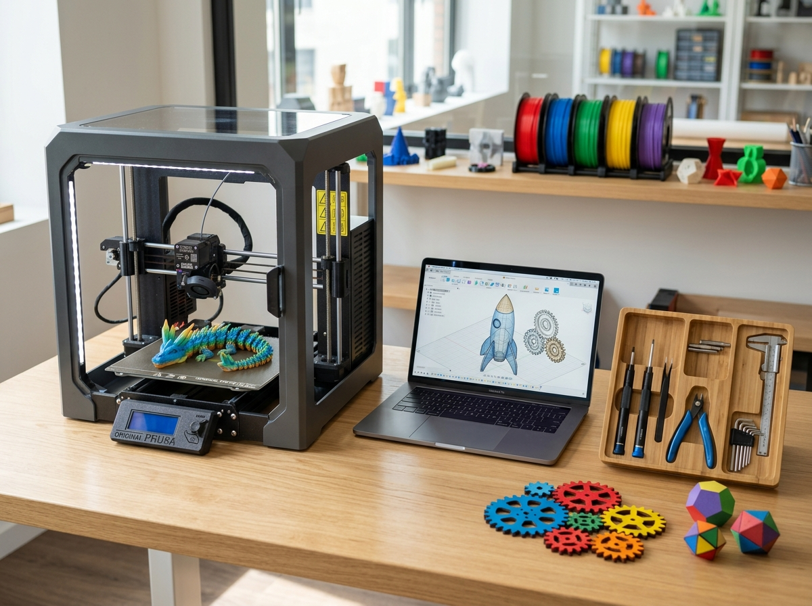
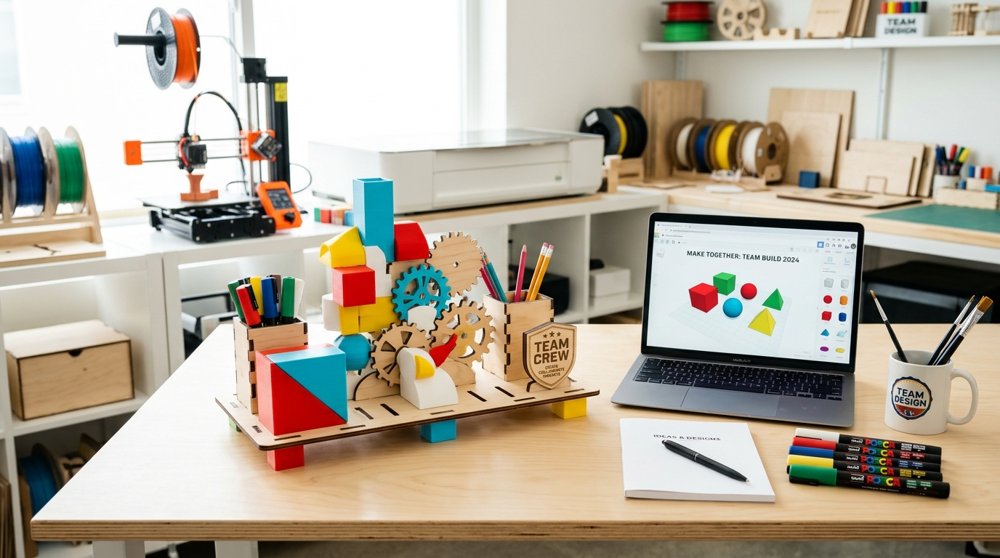

Workshops corporativos de alto impacto para equipos y programas vacacionales STEAM para los hijos de tus colaboradores. Cero compra de máquinas; liderados por tutores diplomados del Fab Academy (Fab Foundation).
Sin gasto en equipos ni repuestos
Dirección con diploma oficial
Equipos, insumos y software libre
Creaciones propias para llevar

Una experiencia práctica integral que eleva el clima laboral sin generarte carga logística.
No necesitas invertir en equipos ni licencias CAD. Trasladamos el laboratorio de fabricación (impresoras 3D, cortadora láser y todos los insumos) directo a tu sede.
Nuestra dirección técnica y tutores cuentan con el diplomado oficial del Fab Academy (Fab Foundation), aplicando metodologías activas de diseño y prototipado digital.
Cada participante vive el ciclo completo de diseño y materializa creaciones y prototipos propios que se lleva a casa, fortaleciendo la creatividad y el trabajo en equipo.
Experiencias prácticas y modulares para fortalecer a tus equipos de trabajo o brindar un beneficio educativo a las familias de tus colaboradores.

Corte láser + Impresión 3DUna experiencia práctica y colaborativa donde los equipos se desconectan de la rutina de oficina. A través de retos maker de diseño y ensamble (corte láser e impresión 3D), tus colaboradores resuelven desafíos creativos juntos, fortaleciendo la comunicación, la integración y el trabajo en equipo de forma ágil, tangible y entretenida.
 Modelado 3D & Fabricación
Modelado 3D & Fabricación
Un beneficio corporativo de alto valor percibido para los hijos de tus colaboradores. Descubren el modelado 3D, diseño vectorial y fabricación digital real en un entorno seguro y lúdico, utilizando software libre en la nube y sin compra de maquinaria para la organización.
Del concepto abstracto al prototipo físico funcional.
Ideación y boceto conceptual libre sobre papel.
Vectorización digital y planos de siluetas en pantalla.
Volumetría 3D y planos de profundidad en software.
Fabricación física con impresora 3D o cortadora láser.
Pintura acrílica manual, detalles y ensamble final.
Exposición grupal del proyecto y Demo Day de cierre.
Nos trasladamos a las instalaciones de tu empresa con logística llave en mano sin sobrecargar a tu equipo.
Nuestra dirección técnica y facilitación cuentan con graduación oficial del Fab Academy (Fab Foundation). Formación global de primer nivel aplicada a experiencias maker prácticas en empresas y colegios de Perú.
Educador maker y director de tinkiLab. Fundador de Digitoys, especialista en metodologías STEAM, modelado 3D y corte láser lúdico.
Arquitecta y fundadora de FABly. Mentora en innovación maker (Innova Fab Women), especialista en diseño espacial y volumetría 3D.
* Talleres y bootcamps liderados por profesionales graduados con amplia experiencia en facilitación pedagógica e innovación maker.
Conversemos para estructurar el taller o programa ideal según las metas de tu equipo, fechas y participantes.